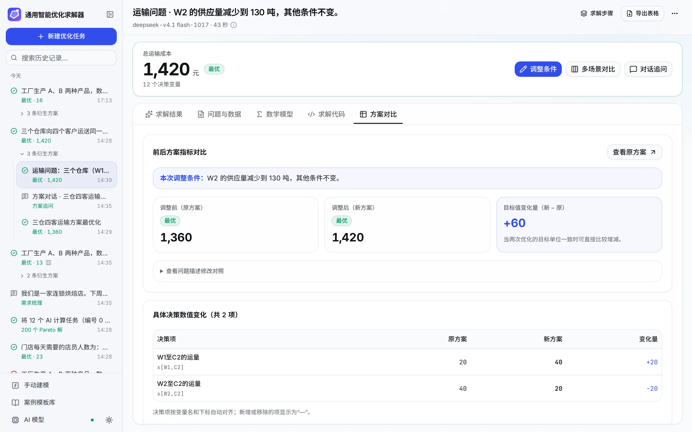

“调整条件”从已有方案生成新问题，再使用原配置完整建模和求解。原、新方案一起保留，并显示题面、目标和决策的变化。
一次调整的操作#
- 打开原方案，在结果页顶部点击“调整条件”。
- 输入具体变化，例如“B至少生产3件，其他条件保持不变”。
- 点击“生成新方案”，查看题面整理、建模与求解进度。
- 完成后打开“方案对比”，查看目标、变量和题面差异。

完整改写题面可使用“更多操作 → 修改后运行”，将问题和设置带回编辑页。
新方案怎样生成#

Mermaid 源码
flowchart TB
Original["原方案输入与配置"] --> Request["新增调整要求"]
Request --> Problem["整理完整新题面"]
Problem --> Method["原方法重新建模"]
Method --> Solve["实际求解与保存"]
Solve --> Compare["原、新方案对比"]
新运行继承基准的方法、模型预设、库、后端选择和附件。题面整理本身有一次模型调用，随后执行所选方法的完整流程。
贯穿案例：提高B的最低产量#
| 项目 | 原方案 | B至少3件 |
|---|---|---|
| A产量 | 3 | 2 |
| B产量 | 2 | 3 |
| 利润 | 13 | 12 |
| 切割使用 | 8 | 7 |
| 装配使用 | 7 | 8 |
可在演示里提交这次变化，并选择原方案继续另一轮操作。
从 A = 3、B = 2、利润 13 元的生产方案开始。点击一条消息执行操作，再从已保存方案中选择后续讨论的基准。
当前讨论方案原方案 · 利润 13 元
选择已保存方案
固定教学案例，数值在浏览器中即时计算。
怎样写清调整要求#
把周二最低人数从3人改为4人，其他日期不变。
将切割容量改为10小时，利润、装配容量和整数要求保持原样。
允许仓库2最多增加20件供给，单位运费沿用附件。
具体指出对象、原规则和新取值，可以让完整题面的变化集中在所需位置。新的费用或容量数据可以先在附件编辑器保存，再按新数据建立运行。
阅读差异与保存基准#
比较使用开始调整时保存的原方案检查点，显示原、新目标值和对应决策。决策按变量名和下标对齐，名称不同但下标唯一对应时（如 A 与 x[A]）视为同一项；无法对应的显示为新增或移除。展开题面差异可查看要求如何进入新问题。